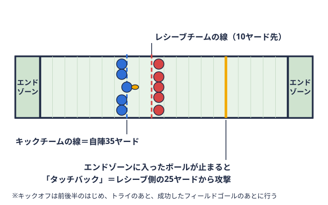

観戦ガイド 2026-10-27
大学アメフトの日程を今週末分まで確認する方法｜関東TOP8・BIG8
「今週末の試合」を探すときに起きやすい困りごと
関東の大学アメフトを観に行こうとして、「今週末、どこで何時から試合があるのか」を調べ始めたものの、情報があちこちに分かれていて迷う場合があります。カードだけ分かってもキックオフ試合開始やタッチダウンの後などに、ボールを蹴って始めるプレー。蹴る側は自陣35ヤードから蹴る。 
この記事では、関東学生アメリカンフットボール連盟（KCFA）が公開している日程情報と、本サイトの日程・結果ページを組み合わせて、今週末の試合を短い手順で確認する方法をまとめます。あわせて、2026年10月27日時点で分かっているTOP8とBIG8の今後の日程も整理します。なお本サイトが扱うのはKCFAの1部リーグであるTOP8とBIG8のみで、関西学生連盟や2部以下のリーグ、7人制は対象外です。
日程を確認できる場所は大きく3つ
今週末の試合を探すとき、確認先は次の3つに分けて考えると整理しやすくなります。
| 確認先 | 分かること | 向いている場面 |
|---|---|---|
| KCFA リーグ戦試合全日程 | 全リーグの日付・会場・カード・キックオフ時刻 | 時刻まで正確に確認したいとき |
| KCFA リーグ戦試合日程（リーグ別） | リーグごとの大会方式・節・日程の変更履歴 | リーグの形や日程変更を確認したいとき |
| KCFA「今週末の試合予定」のお知らせ | その週末の全試合、チケット料金、配信の有無、会場の注意事項 | 出かける前の最終確認 |
KCFAの「全日程」ページは、アミノバイタルフィールドをはじめ各大学グラウンドで行われる試合が、会場ごとにまとめて並ぶ形式です。TOP8・BIG8だけでなく3部や医科歯科のリーグ戦も同じページに載るため、目当てのカードを探す際は、リーグ名や大学名で絞って見ることになります。
一方、本サイトの日程・結果ページは、TOP8とBIG8に絞って「今後の試合」と「試合結果」を分けて表示しています。目的のカードがすぐ見つかる反面、キックオフ時刻は載っていないため、時刻を確認する際はKCFAの日程ページを併用する必要があります。
確認の手順は4ステップ
実際に確認するときの流れは、次の4ステップが基本になります。
- 本サイトの日程・結果でカードを探す。TOP8・BIG8なら「今後の試合」欄に、直近の日付順でカードが並んでいます。
- KCFAの全日程ページでキックオフ時刻を確認する。同じ会場で1日に複数試合が組まれるため、時刻を確認しないと、見たい試合の開始に間に合わない場合があります。
- 週の初めに出る「今週末の試合予定」のお知らせを見る。KCFAは週ごとに全試合の一覧をお知らせとして出しており、チケット料金や配信の有無もそこに記載されています。
- 当日の朝にもう一度日程ページを見る。リーグ別日程ページには「変更」欄があり、日程や時刻の変更履歴を確認できます。
最終的な時刻や会場は、必ずKCFAの公式情報で確認してください。本サイトの「今後の試合」は、KCFAが公表している星取表リーグ戦の全チームの勝敗を、対戦相手ごとに○と●で表にしたもの。用語辞典で見るなどの情報を整形したものです。
キックオフ時刻の読み方
アミノバイタルフィールドでは1日に3試合が組まれる形がよく見られます。たとえば2026年10月31日（土）のKCFAの全日程ページでは、アミノバイタルフィールドに11時、14時、17時の3つのキックオフが並んでいます。この日の11時がTOP8の明治大学対東京大学、14時が早稲田大学対法政大学で、17時には別リーグの試合が組まれています。つまり、TOP8の試合を目当てに行く場合は、午前と午後のどちらのカードかを確認しておくと動きやすくなります。
同じ日でも、リーグが違えば試合の時間帯が異なります。TOP8のカードが11時・14時のどちらに入るかは週ごとに変わるため、前の週と同じ時刻を想定して出かけるのは避けたほうが安全です。
また、TOP8の第1節（2026年8月27日〜30日）は暑さ対策として4試合すべてナイトゲームで開催されたと、KCFAの発表に書かれています。このように、時期によって開催の形が変わる場合もあります。
2026年10月27日時点のTOP8の今後の日程
本サイトの日程・結果ページとKCFAの全日程ページに掲載されているTOP8の今後の試合は、次のとおりです（2026年10月27日時点。会場はいずれもアミノバイタルフィールド）。
| 日付 | キックオフ | カード |
|---|---|---|
| 10月31日（土） | 11:00 | 明治大学 対 東京大学 |
| 10月31日（土） | 14:00 | 早稲田大学 対 法政大学 |
| 11月1日（日） | 11:00 | 立教大学 対 慶應義塾大学 |
| 11月1日（日） | 14:00 | 中央大学 対 日本体育大学 |
| 11月14日（土） | 11:00 | 慶應義塾大学 対 日本体育大学 |
| 11月14日（土） | 14:00 | 立教大学 対 中央大学 |
| 11月15日（日） | 11:00 | 法政大学 対 東京大学 |
| 11月15日（日） | 14:00 | 早稲田大学 対 明治大学 |
TOP8は8校総当たりで、最終節は11月14日（土）・15日（日）です。10月31日・11月1日の2日間と、11月14日・15日の2日間で、レギュラーシーズンの残りが4日間、8試合となっています。
直近の結果は、本サイトの日程・結果ページで確認できます。たとえば10月17日（土）の立教大学対日本体育大学は39対17、10月18日（日）の中央大学対慶應義塾大学は42対20という結果が掲載されています。シーズン全体の流れの中で、これから観に行く試合がどの位置にあたるのかを知りたい場合は、関東学生アメフトリーグの順位表の見方とあわせてTOP8 順位表も確認すると、勝ち点リーグ戦の順位を決める点数。関東学生リーグでは、勝ち3点・引き分け1点・負け0点。用語辞典で見るの並びが把握しやすくなります。
BIG8の日程は一次リーグから二次リーグに切り替わる
BIG8は2026年度、Aブロック・Bブロックの一次リーグ（各ブロック内総当たり）を行ったあと、結果によって上位と下位に分かれて二次リーグを行う方式です。KCFAの発表（2026年2月18日）によると、二次リーグは上位リーグ・下位リーグのいずれも3節構成です。
KCFAのリーグ別日程ページでは、二次リーグは「二次上位リーグ」と「二次チャレンジリーグ」の名称で掲載されています。2026年10月27日時点で確認できる日程は次のとおりです。
二次上位リーグ
- 11月7日（土）：専修大学対桜美林大学、日本大学対青山学院大学、駒澤大学対明治学院大学
- 11月22日（日）：専修大学対明治学院大学、日本大学対駒澤大学、青山学院大学対桜美林大学
- 12月5日（土）：専修大学対日本大学、駒澤大学対桜美林大学、明治学院大学対青山学院大学
二次チャレンジリーグ
- 11月8日（日）：横浜国立大学対東海大学、国士舘大学対一橋大学
- 11月21日（土）：横浜国立大学対一橋大学、国士舘大学対東海大学
- 12月6日（日）：一橋大学対東海大学
一次リーグの最終週にあたる10月24日（土）・25日（日）の試合結果は、本サイトのBIG8 日程・結果に反映されています。10月25日（日）には明治学院大学が東海大学に13対10で、桜美林大学が国士舘大学に24対14で勝っています。
BIG8の二次リーグは、日程の発表のされ方や名称がシーズンごとに変わる場合があります。BIG8の観戦を予定している場合は、前週の段階でKCFAのリーグ別日程ページにある節の対戦カードを確認しておくのが確実です。なお本サイトの順位表と日程ページの一部は、KCFAの星取表の更新タイミングによって、結果の反映が遅れる場合があります。
出かける前に確認しておきたいこと
日程が分かったら、観戦当日までに次の点も確認しておくと安心です。KCFAの「今週末の試合予定（17、18日）」のお知らせ（KCFA）に書かれている内容から、主なものを挙げます。
- チケット：電子チケットは一般1,300円、大学生700円（入場時に学生証の提示が必要）、紙チケットは一般1,500円、大学生・シニア1,000円と案内されています。障がい者手帳をお持ちの方と高校生以下は無料入場の扱いです。電子チケットはKCFA電子チケットサイトから購入できます。金額や条件は変更される場合があるため、観戦する週のお知らせで確認してください。
- 配信：TOP8の試合には有料配信があると、同じお知らせに書かれています。会場に行けない場合の選択肢になります。詳しくは大学アメフトを見る方法｜配信・テレビ・会場観戦にまとめています。
- 会場でのルール：アミノバイタルフィールドは敷地内全面禁煙で、試合会場からの再入場は原則できません（シーズンチケット保持者を除く）。
- 持ち物・服装：屋外観戦のため、季節に合わせた防寒や日よけが必要です。アメフト観戦の持ち物・服装・チケットに、持ち物の目安と会場での過ごし方を整理しています。
試合の日程が決まるしくみを知っておくと便利
最後に、日程を読むときに知っておくと役立つ背景を整理します。
TOP8は8校総当たりで、1チームあたり7試合です。毎週全チームが試合をするわけではなく、1節は2日間にわたって4試合が行われる形で、2026年度は節と節のあいだに1〜2週間空く場合があります（例：11月1日の次は11月14日）。そのため、「今週末はTOP8の試合がない」という週も出てきます。応援しているチームの次の試合日を探すときは、チーム一覧からチームページに入り、日程を確認するのが近道です。
また、レギュラーシーズンが終わったあとには、全日本大学選手権への出場チームの試合や、TOP8・BIG8間のチャレンジマッチ上位リーグの下位チームと、下位リーグの上位チームが戦う、リーグの入れ替えをかけた試合。 用語辞典で見るが控えています。こうした試合の日程は、レギュラーシーズンの順位が確定してから発表される場合があります。KCFAは2026年10月18日に「法政大学が全日本大学選手権へ」とお知らせを出しています。シーズンの終盤に何が起きるのかは、大学アメフトTOP8とはと甲子園ボウルとはで詳しく説明しています。年間の流れを把握したい方は、関東大学アメフトの1年間も参考になります。
用語辞典で見るが控えています。こうした試合の日程は、レギュラーシーズンの順位が確定してから発表される場合があります。KCFAは2026年10月18日に「法政大学が全日本大学選手権へ」とお知らせを出しています。シーズンの終盤に何が起きるのかは、大学アメフトTOP8とはと甲子園ボウルとはで詳しく説明しています。年間の流れを把握したい方は、関東大学アメフトの1年間も参考になります。
まとめ
- 今週末の試合は、本サイトの日程・結果でカードを探し、KCFAの全日程ページでキックオフ時刻を確認する流れが分かりやすくなります
- 同じ会場で11時・14時・17時のように1日に複数試合が組まれるため、時刻の確認は欠かせません
- 2026年10月27日時点のTOP8は10月31日・11月1日、11月14日・15日の2節が残っています
- BIG8は一次リーグが終わり、11月7日・8日から二次リーグが始まります。二次上位リーグと二次チャレンジリーグで日程が異なります
- チケット料金、配信、会場ルールは週ごとのKCFAのお知らせで最終確認してください
参考リンク
- KCFA｜リーグ戦試合全日程
- KCFA｜リーグ戦試合日程
- KCFA｜今週末の試合予定（17、18日）
- KCFA｜2026年度秋季リーグ戦TOP8の日程について
- KCFA｜1部BIG8の大会方式とブロック分けについて（2026年2月18日）
- KCFA 電子チケットサイト
本記事の内容は2026年10月27日時点のKCFA公表情報にもとづいています。日程や時刻は変更される場合があるため、最新の情報はKCFA公式サイトでご確認ください。
この部活・競技を応援したい方へ
協賛・応援はこちらから。
取材してほしい部活を募集中
あなたの部活・チームを取材してほしい方はこちらから。
オフシーズン・引退後に、長期インターンという選択
部活で培った力を実務で試す。16タイプ診断（30秒）で合う企業がわかります。